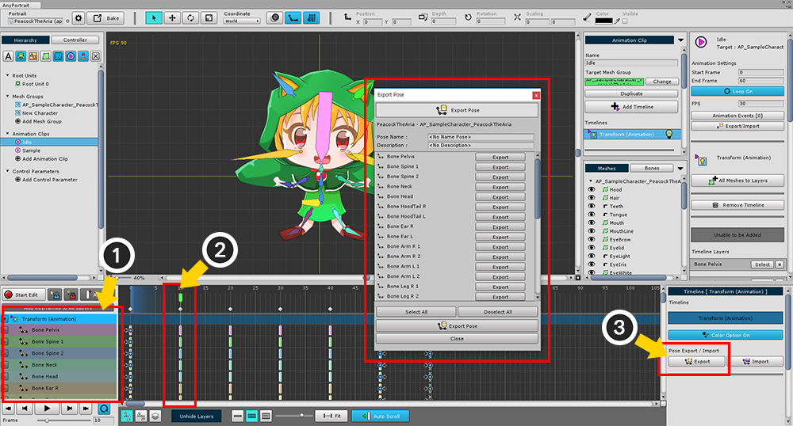
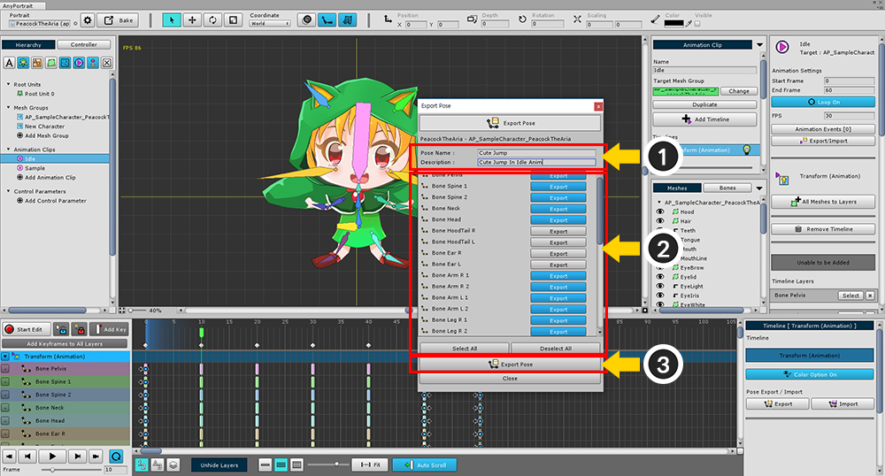
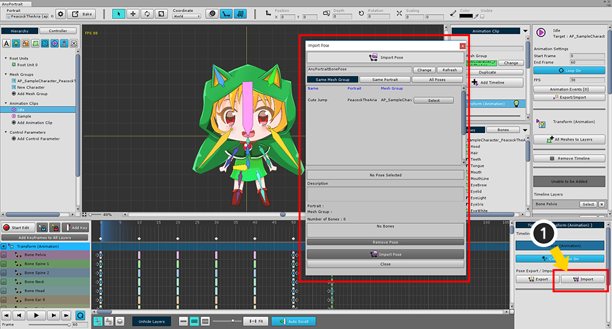
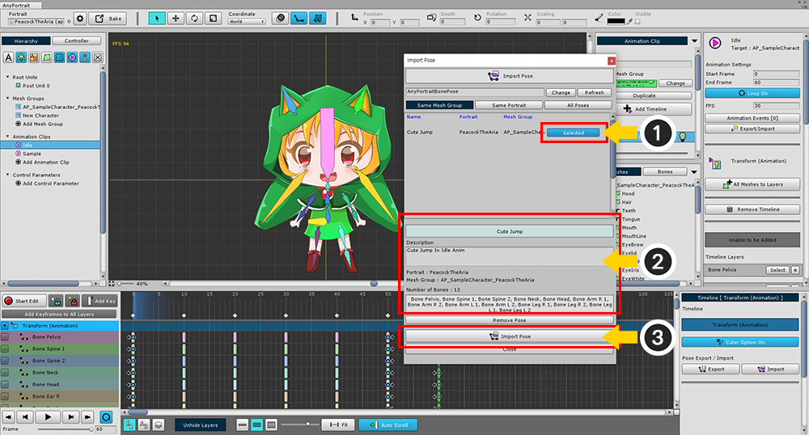
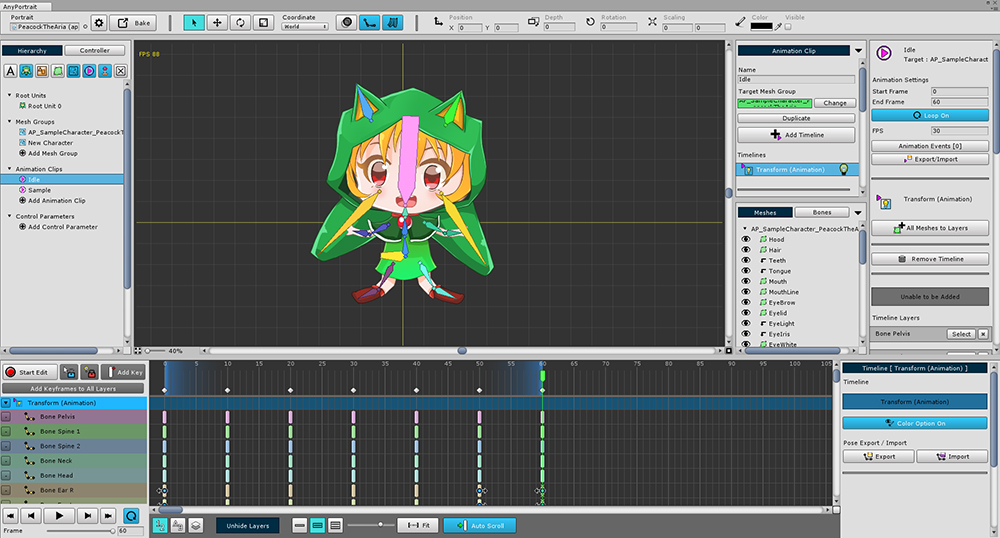
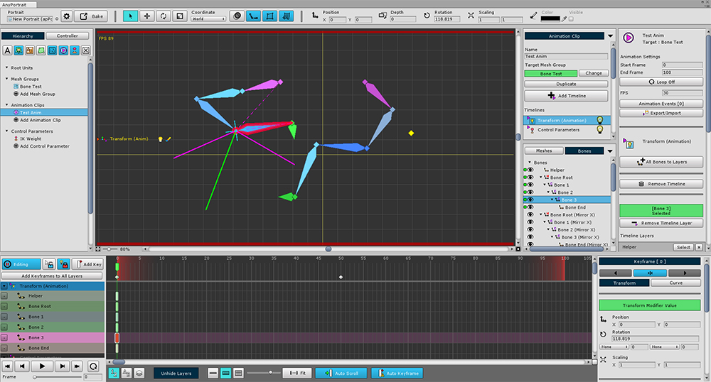
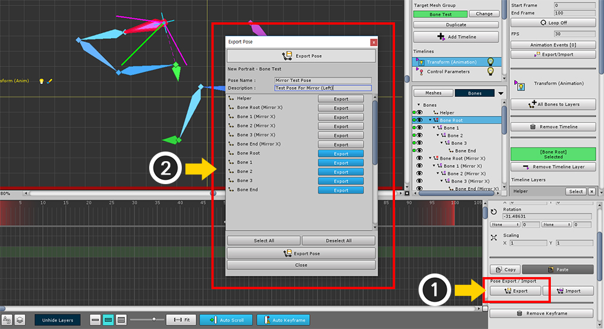
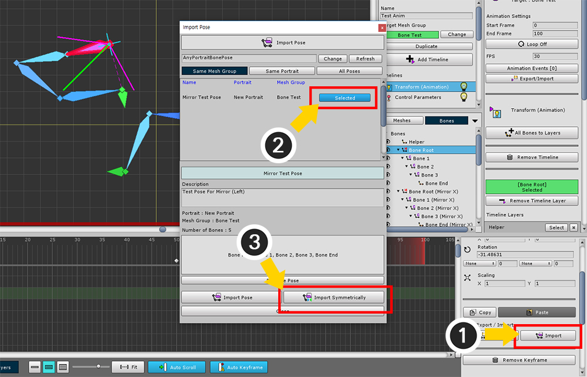
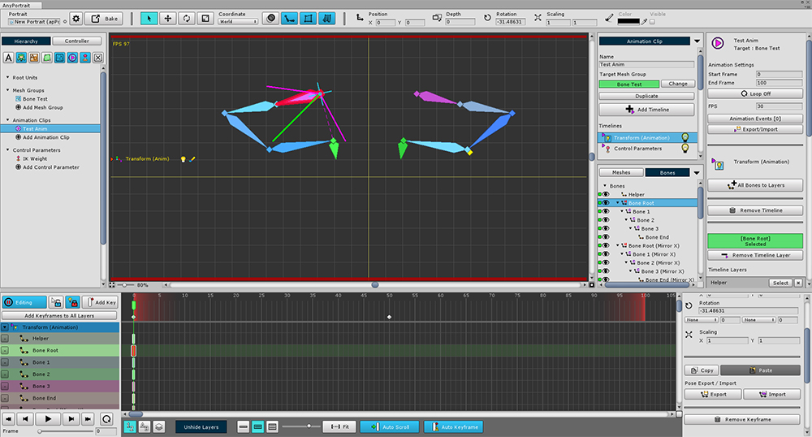

AnyPortrait > 메뉴얼 > 본 애니메이션의 포즈 복사하기/붙여넣기
본 애니메이션의 포즈 복사하기/붙여넣기
1.0.4
본 애니메이션 작업을 하면서 포즈를 반복적으로 만들어야 하는 경우가 많습니다.
같은 "서있기"에서 여러가지 모션 애니메이션을 만들기도 하고,
일정 시간마다 같은 동작을 취할 때도 있습니다.
이 페이지는 1개의 프레임에서의 본의 형태를 빠르게 복사하여 다른 프레임에 붙여넣는 방법을 다룹니다.
포즈 복사하기

(1) 본이 포함된 타임라인을 선택하고
(2) 복사하고자 하는 곳으로 타임 슬라이더를 움직인 뒤,
(3) 타임라인이나 키프레임 속성 UI에서 Export 버튼을 누릅니다.

(1) 포즈 이름과 설명을 입력합니다.
(2) 복사하고자 하는 본들을 선택합니다. Select All / Deselect All 버튼으로 일괄 제어할 수 있습니다.
(3) Export Pose 버튼을 눌러서 파일로 저장합니다.
파일은 자동으로 생성되므로 다른 내보내기와 달리 간편하게 복사를 할 수 있습니다.
포즈 붙여넣기

동일한 방법으로 본이 있는 타임라인을 선택한 상태에서 Import 버튼을 누릅니다.

방금 저장했던 포즈가 리스트에 나타납니다.
(1) 붙여넣고자 하는 포즈를 선택하고,
(2) 저장된 포즈의 이름과 설명, 본들을 확인한 뒤,
(3) Import Pose 버튼을 눌러서 붙여넣습니다.

저장했던 본들의 포즈가 선택적으로 붙여넣어집니다.
(키프레임이 없다면 자동으로 생성합니다.)
포즈 붙여넣기 다이얼로그

포즈를 저장하는 다이얼로그와 달리 가져오는 다이얼로그는 조금 복잡합니다.
1. 파일 저장 경로
에디터 설정에 저장된 본 포즈 저장 경로입니다.
2. 포즈 필터
"같은 메시 그룹", "같은 apPortrait", "전체 포즈"으로 필터링하여 보여줍니다.
3. 포즈 항목
저장된 포즈입니다. Select 버튼을 눌러서 선택합니다.
4. 선택된 포즈 정보
포즈 이름, 설명과 저장된 본의 이름들이 나타납니다.
5. 포즈 삭제하기
저장된 포즈를 삭제합니다.
6. 포즈 가져오기
애니메이션 키프레임을 생성하면서 포즈를 붙여넣습니다.
미러 본으로 포즈 붙여넣기

미러 본이 있다면 포즈를 반전해서 복사할 수 있습니다.
본의 미러 복사에 대해서는 관련 페이지를 참고하세요.

포즈를 복사하는 과정은 동일합니다.
(1) Export 버튼을 누르고 (2) 복사할 본들을 선택하여 포즈를 저장합니다.

(1) Import 버튼을 눌러서 포즈 붙여넣기 다이얼로그를 엽니다.
(2) 저장했던 포즈를 선택하고,
(3) Import Symmetrically 버튼을 눌러서 미러 본으로 포즈를 복사합니다.
미러 본이 없다면 선택한 본으로 포즈가 복사됩니다.

미러 본으로 포즈가 복사된 것을 확인하실 수 있습니다.